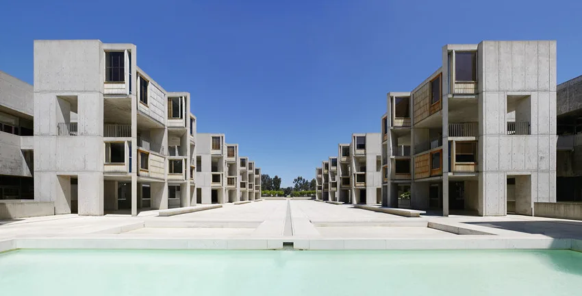
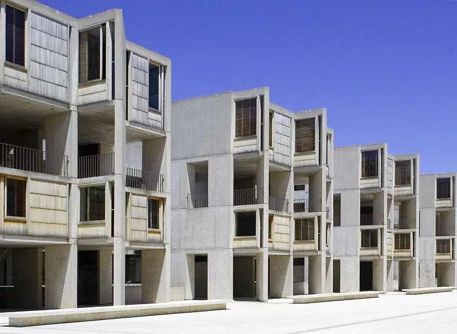
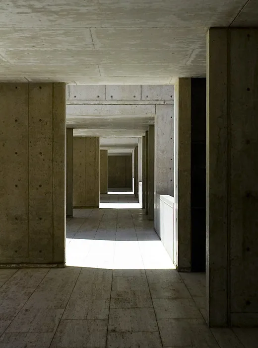
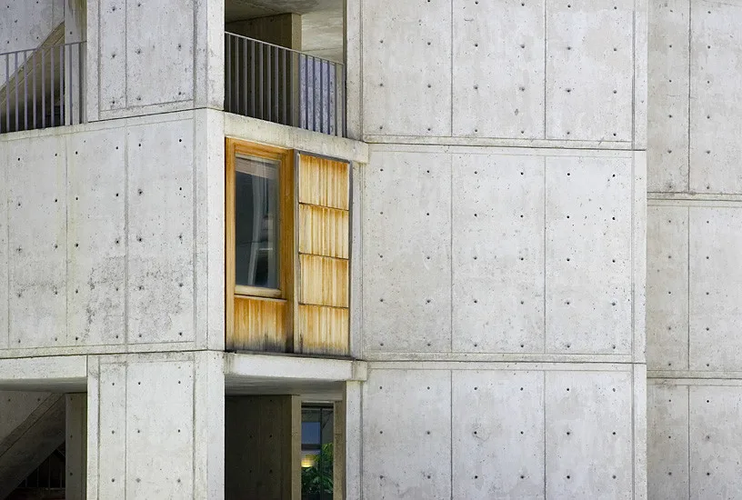
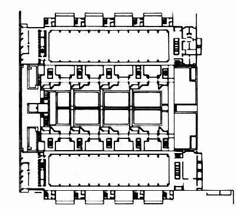
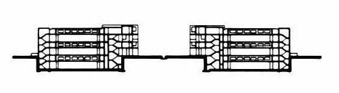

Research institute · 1965
Salk Institute
Louis Kahn
La Jolla, California, USA
Scientists move between adaptable laboratories for experiments and individual studies for concentrated thought. The central courtyard and open-air circulation connect these different working environments and create opportunities for informal exchange.
Full-height service floors sit between the laboratories, carrying pipes and equipment through deep concrete trusses. This separates changing technical infrastructure from the occupied rooms, allowing laboratory layouts and services to be adapted with less disruption to research.


Relevant connections
THINK
Individual studies support scientific thought away from the laboratory benches.
Images and drawings / 06









